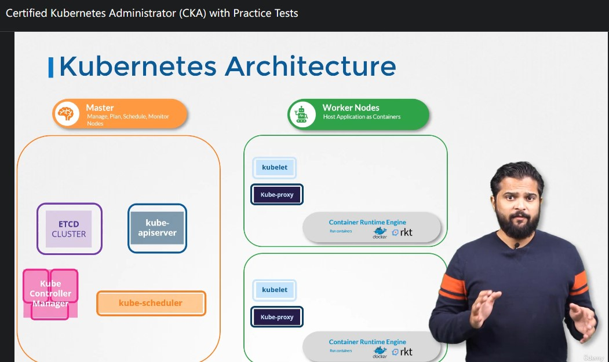
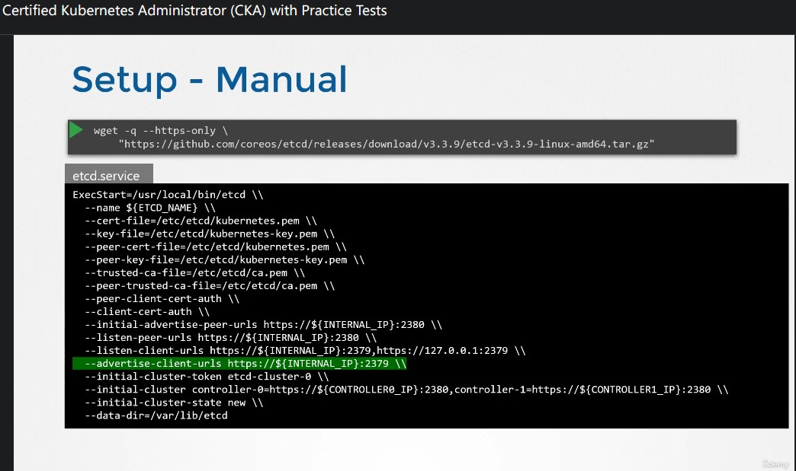
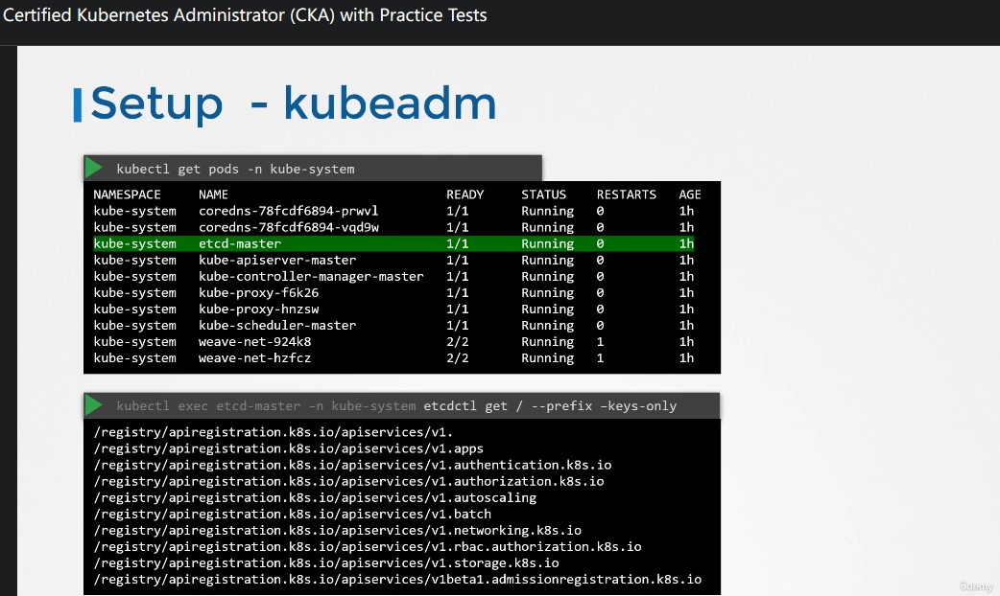
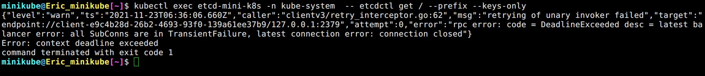
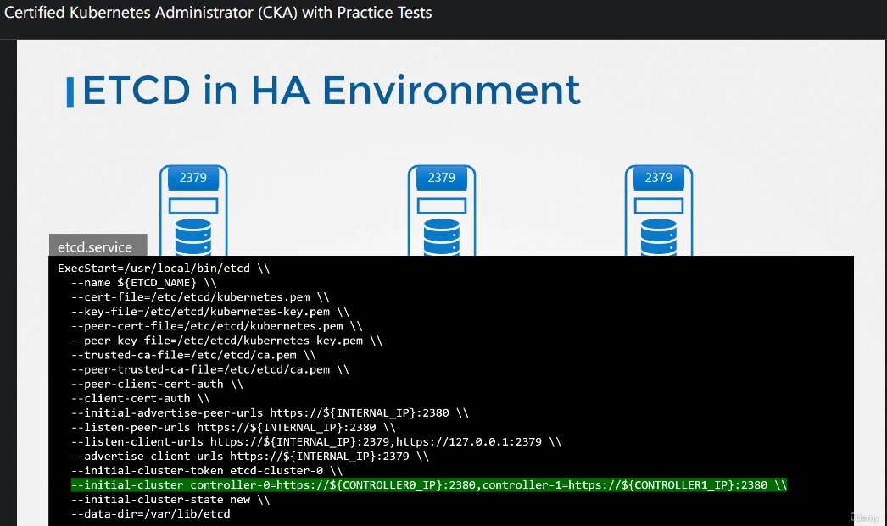
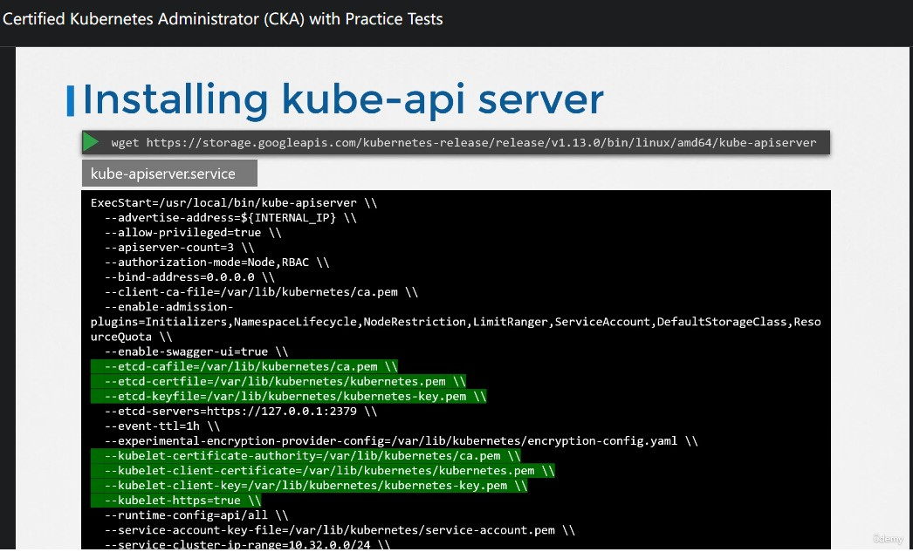
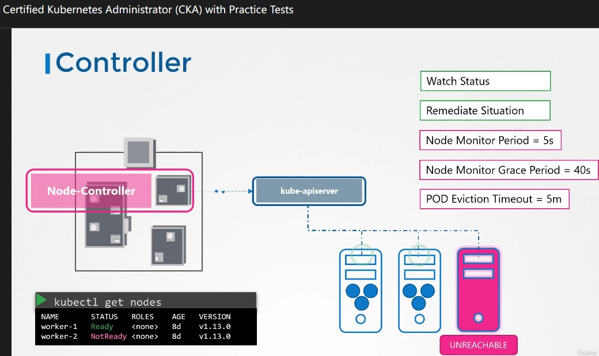
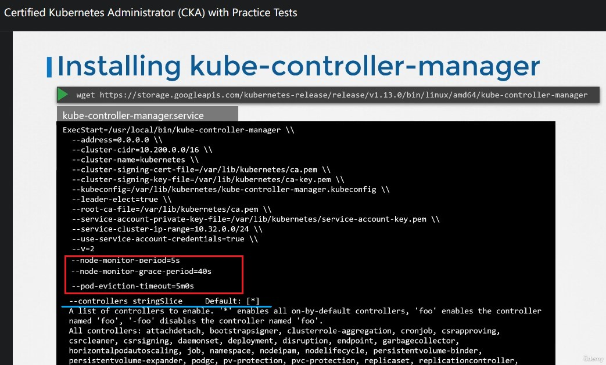
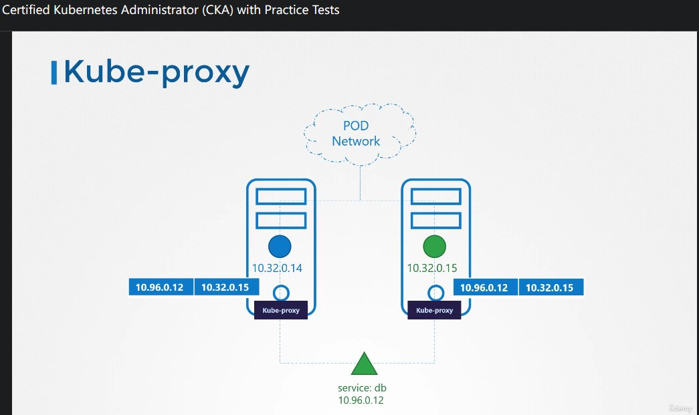
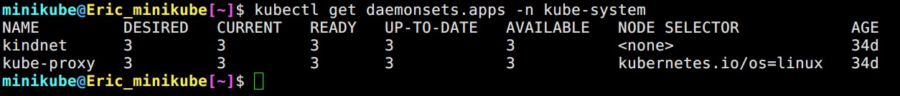

CKA Note Section 2 Core Concepts
Contents
10. Cluster Architecture

▲ Kubernetes controll plane / worker node 組件
12. ETCD in Kubernetes
- 透過
kubectl get都是 (透過api-server) 向 etcd 查詢資料。 - 講師提供的練習環境是使用
kubeadm搭建的，課程最後的章節會教導如何從 scratch 建立 Kubernetes cluster。

▲ --advertise-client-urls etcd LISTEN 的 IP 以及 port，其中 port 必須是 2379。

▲ 使用 kubeadm 安裝的話 etcd 會被安裝在 pod 裡面。
- 透過
kubectl exec etcd-mini-k8s -n kube-system -- etcdctl get / --prefix --keys-only可以查詢key。 - etcd 的根目錄是
/registry。

▲ 不過因為沒有傳送給予 CA 憑證，所以不給查詢 (後面章節應該會介紹)
有嘗試用過這篇給的方式，沒用 (沒有細查，應該是 cert 的位置不對吧~) etcd-list-keys

▲ 因為 etcd 極為重要，通常都會弄 HA! config 內就需要知道彼此在哪裡。
14. Kube-API Server
- 除了透過
kubectl也可以直接對api-server傳送POST操作。 api-serverkube-scheduler會持續監測api-server，所以它會知道有新的任務並且指派 which worker node should it placed，並且回傳api-server。 (假設我們要建立pod)- 接著
api-server會更新 etcd cluster 內的資料。 - 再來
api-server會傳送任務單到剛才kube-scheduler指派的 worker node 身上的kubelet。 kubelet使用 container runtime 建立 container，並且回傳狀態給api-server。api-server會更新 etcd cluster 內的資料。

▲ 快速看過 scratch install api-server 有哪些參數需要被設定。
15. Kube Controller Manager
Kube Controller Manager 其實是一個統稱，裡面包含了:
- Deployment-Controller
- Namespace-Controller
- Endpoint-Controller
- CronJob-Controller
- Job-Controller
- PV Protection-Controller
- Service Account-Controller
- Stateful-Controller
- Replicaset
- Node-Controller
- Replication-Controller
為什麼我要打這麼多 總之 resource controller 的功能就是滿足 desired state!

▲ Node-Controller 運作機制。每 5 秒 ping 一次 (實際上應該不是 ping 啦)，在被標註成 Unreachable 之前會給 40 秒的 node monitor grace period，維持 Unreachable 狀態超過 5 分鐘才會觸發 pod eviction。
延伸閱讀: 20211122_ Kubernetes 多叢集及單叢集架構選擇探討

▲ 快速看過 scratch install Kube Controller Manager 所需參數。包含剛剛提到的秒數都是 option，預設 Kube Controller Manager 開啟所有 controller，也是可以透過參數單獨關閉
|
|
16. Kube Scheduler
- scheduler 只被用來挑選 worker node，實際上建立 container 的是
kubelet kube-scheduler在挑選時，首先會針對 worker node 做 filter 去除掉不符合資格的 node，接著 rank it (例如: 這個 resource 放置後剩餘資源多者獲勝)。當然，這是可以被客製化的，後面會有專門一個章節討論。
|
|
17. Kubelet
- kubeadm 的安裝方式，預設並沒有安裝
kubelet必須手動在 worker node 安裝
|
|
18. Kube Proxy
在 CKAD 課程當中我們知道 pod 可以跨 worker node 訪問 pod，最好的方式是透過 service (而非 pod IP)。
但 service 並不像 pod 一樣有個 container 實體存在 worker node，service 的資訊會被記錄在 kube-proxy 當中，並且產生出規則 (例如: iptable)。
後面會有很大一個章節在討論網路的部分~

▲ kube-proxy

▲ kubeadm 部屬 kube-proxy 的方式是透過 daemondset
Author 老柯
LastMod 2021-11-23